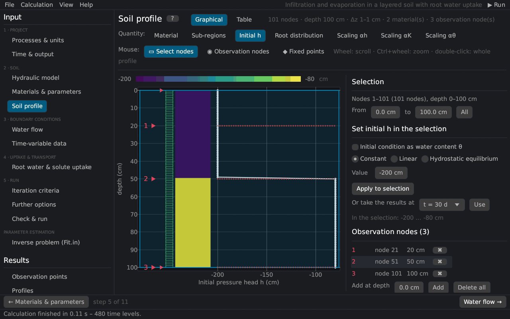
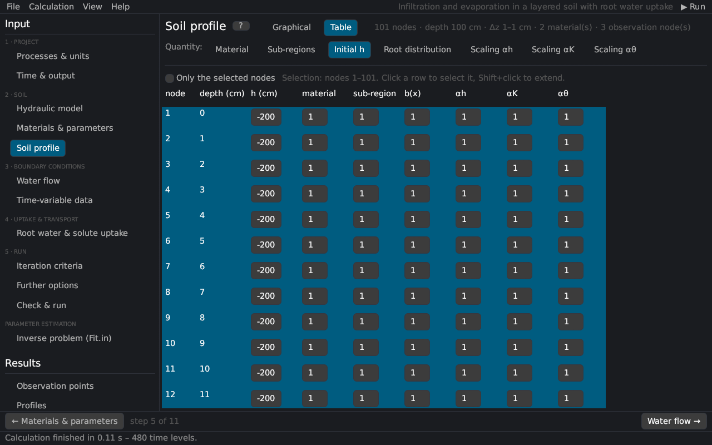

Soil profile
The soil profile editor sets the finite element mesh and all nodal values: materials, sub-regions of the mass balance, the initial condition (pressure head or water content), the root distribution, the scaling factors, temperatures and concentrations, observation nodes and fixed points. It replaces the Profile module (PROFILE.DAT) of HYDRUS-1D.


Views
- Graphical: the selected quantity is drawn as a coloured column next to its curve; nodes, observation nodes (◉) and fixed points (◆) are marked.
- Table: all nodal values; a click selects a node, Shift+click extends the selection; Only the selected nodes shortens the table.


The header line shows the number of nodes, the depth, the smallest and largest element and the numbers of materials and observation nodes.
Quantities
| Quantity | Description |
|---|---|
| Material | Material number of the node (Materials & parameters). |
| Sub-regions | Regions of the mass balance (Balance); they do not change the simulation. Sub-regions = materials gives one region per material. |
| Initial h / Initial θ | Initial pressure head [L] or, with Initial condition as water content θ, the initial water content. |
| Root distribution | Relative root density b(x) [–] (with root water uptake); normalized by the program (root distribution). |
| Scaling αh, αK, αθ | Scaling factors of the pressure head, the conductivity and the water content (scaling); 1 = no scaling. |
| Temperature | Initial temperature [°C] (heat transport or temperature-dependent solute parameters). |
| Conc. k / Non-eq. conc. k | Initial liquid concentration of solute k [M/L³] and the initial sorbed (kinetic sites) or immobile concentration. |
Selecting nodes
With the mouse tool Select nodes: drag a depth range; a click selects one node (for material and sub-region a whole layer); Shift+click extends the selection; Ctrl+A selects all. Or enter the depths From … to …. Mouse wheel: scroll; Ctrl+wheel: zoom; double-click: whole profile.
Setting values in the selection
| Distribution | Description |
|---|---|
| Constant | the same value at all selected nodes |
| Linear | linear between the values at the top and the bottom of the selection |
| Hydrostatic equilibrium | h = h(bottom) − (z(bottom) − z)·cos α from the lowest selected node (initial pressure head): no flow at the start |
| Hoffman & van Genuchten (1983) | root distribution constant in the upper 20 % of the rooting depth Lr, linear to zero at Lr Hoffman and van Genuchten (1983) |
| Vrugt et al. (2001) | b(z) = (1 − z/zm) exp(−p/zm · |z* − z|) with the maximum rooting depth zm, the depth of maximum intensity z* and p = pz above z* (p = 1 below) Vrugt et al. (2001) |
Apply to selection sets the values. With results of a previous run, Or take the results at t = … sets the initial pressure head (or water content), temperature or concentrations from any print time (interpolated in depth). With Kool–Parker hysteresis, Restart from these results also takes the hysteresis state of all nodes (restart).
Observation nodes
Observation nodes record h, θ, temperature, flux and concentrations at every time step (Observation points). With the mouse tool Observation nodes a click in the profile adds an observation node at the nearest node, or selects the observation node under the pointer (it is drawn larger); dragging moves it to another node, a double-click or the Delete key removes it. The list on the right shows every observation node with its node number and depth: select one, drag or type its node number or depth (a depth moves it to the nearest node; nodes that are already observation nodes are skipped), ✖ removes one. Add at depth adds one at a typed depth, Delete all removes all (at most 100).
Profile depth and discretization
| Input | Description |
|---|---|
| Profile depth | depth of the profile [L] |
| Number of nodes | 2–1001 |
| Fixed points | depths that are always nodes, with the relative size of the elements above and below each point; the surface and the bottom are always fixed points |
Fixed points at material boundaries adds a fixed point at every change of material; Uniform sets all relative sizes to 1. With relative sizes, the nodes are denser where the size is small, e.g. 0.1 at the surface and 1 at the bottom for a fine mesh near the surface. Generate nodes creates the new nodes and interpolates all nodal values onto them (observation nodes keep their depth); Discard drops the changes. Fixed points are stored in the header of PROFILE.DAT, as in HYDRUS-1D.
See notes on spatial and temporal discretization for the choice of the element sizes.
Inclination
cos α is the cosine of the angle between the flow direction and the vertical (1 = vertical flow, 0 = horizontal flow) (Richards equation).
Literature cited in this topic
- Hoffman, G. J., and M. Th. van Genuchten (1983). Soil properties for efficient use of water and salinity control. In: H. M. Taylor, W. R. Jordan, and T. R. Sinclair (eds.), Limitations to Efficient Water Use in Crop Production, ASA, CSSA, SSSA, Madison, WI, pp. 73–85.
- Vrugt, J. A., M. T. van Wijk, J. W. Hopmans, and J. Šimůnek (2001). One-, two-, and three-dimensional root water uptake functions for transient modeling. Water Resources Research 37(10): 2457–2470. doi:10.1029/2000WR000027
All sources: References.